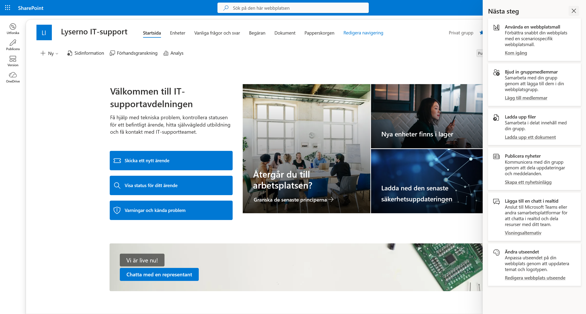
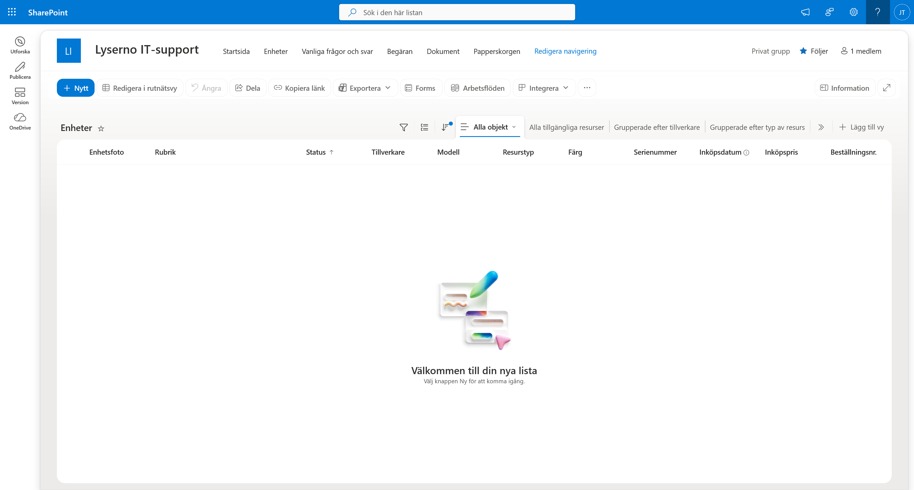
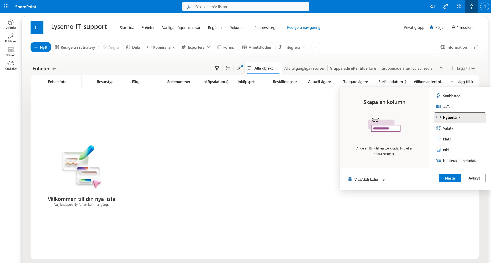
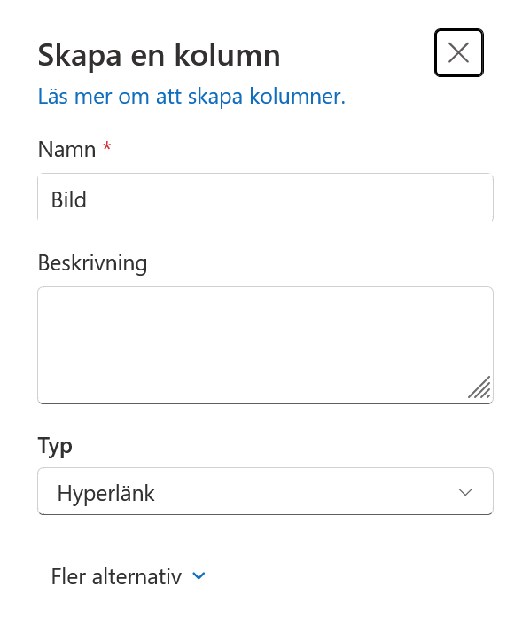
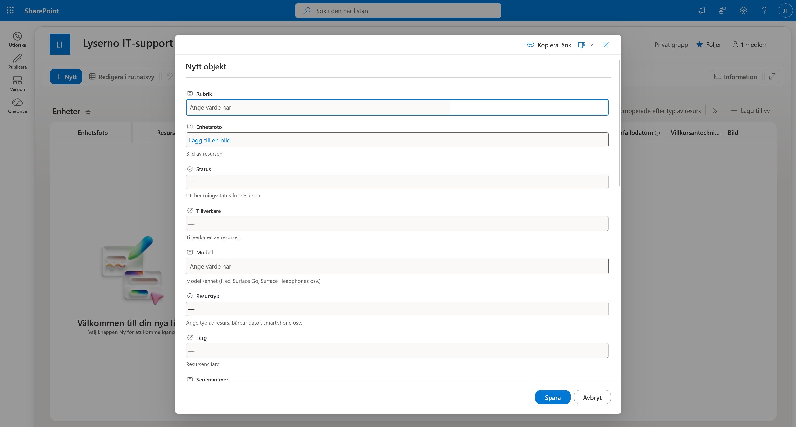
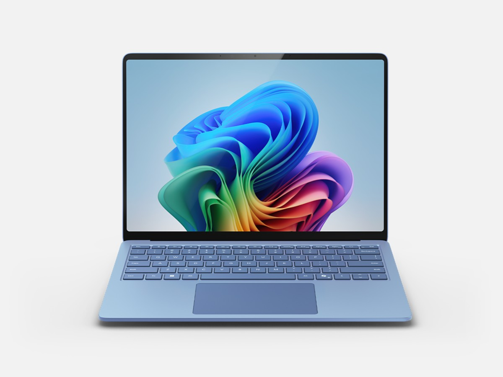

1. Kursuppsättning
Innan vi börjar bygga Lysernos IT-supportagent förbereder vi åtkomsten till Copilot Studio, skapar en personlig utvecklingsmiljö och lägger upp kursens data i SharePoint.
När kapitlet är klart har du:
- tillgång till Copilot Studio för att bygga och testa agenten
- en egen utvecklingsmiljö med Dataverse
- kontrollerat att AI-nav går att öppna
- SharePoint-webbplatsen Lyserno IT-support
- SharePoint-listan Enheter med kursens fem enheter
Använd samma konto genom hela uppsättningen
Du behöver en e-postadress för arbete eller skola. Personliga konton som @outlook.com och @gmail.com stöds inte för registreringen. Använd samma Microsoft 365-konto i Copilot Studio, Power Apps och SharePoint.
Om organisationen har stängt av självbetjäningsregistrering behöver du hjälp av en Microsoft 365- eller Power Platform-administratör.
Del 1: Aktivera Copilot Studio
Om du redan har åtkomst till Copilot Studio kan du gå vidare till Del 2: Skapa en utvecklingsmiljö.
1. Starta registreringen
- Öppna Microsoft Copilot Studio i en ny flik.
- Välj Prova kostnadsfritt.

2. Ange ditt konto
- Skriv in din e-postadress för arbete eller skola.
- Välj Nästa.

Microsoft kontrollerar om adressen redan tillhör ett befintligt Microsoft-konto.
3. Logga in eller starta utvärderingen
- Om kontot redan finns väljer du Logga in och genomför den vanliga inloggningen.
- Om kontot ännu inte har Copilot Studio följer du registreringsflödet och startar en utvärderingsversion.

I det sista steget kan du behöva välja land eller region. Kontrollera uppgifterna och välj sedan Start free trial eller motsvarande svensk knapp.

Om utvärderingsversionen
Utvärderingsversionen gäller inledningsvis i 30 dagar. När perioden löper ut kan den förlängas med ytterligare 30 dagar, och Microsoft anger att agenten kan fortsätta fungera i upp till 90 dagar efter att utvärderingen löpt ut.
Licensen låter dig bygga och testa agenten i testchatten, vilket räcker under kursen. Den tillåter däremot inte publicering. Läs mer i Microsofts aktuella information om åtkomst och utvärderingslicenser.
Del 2: Skapa en utvecklingsmiljö
Power Apps Developer Plan ger dig en kostnadsfri personlig miljö för utveckling och test. Vi använder den när vi bygger agenten, verktygen och agentflödet.
1. Registrera Developer Plan
- Öppna Power Apps Developer Plan i en ny flik.
- Välj Börja använda kostnadsfritt.

- Skriv in samma e-postadress som du använde för Copilot Studio.
- Markera rutan för att godkänna informationen och avtalen.
- När knappen aktiveras väljer du Börja kostnadsfritt.

När registreringen är klar skickas du vidare till Power Apps.
2. Kontrollera miljön
Den nya miljön får normalt ett namn baserat på ditt användarnamn, exempelvis Miljö för Joel Thyberg. Om en miljö med samma namn redan finns kan den nya få ett tillägg som (1).

- Välj miljöväljaren uppe i det högra hörnet.
- Leta efter den nya miljön under Skapa appar med Dataverse eller Andra miljöer.
- Välj din personliga utvecklingsmiljö så att en bock visas bredvid namnet.

Miljön kan behöva några minuter
Uppdatera sidan om miljön inte visas direkt. I vissa klientorganisationer kan det ta upp till ungefär tio minuter innan miljön är klar.
Utgå från miljöns namn. Välj din personliga utvecklingsmiljö, inte organisationens standardmiljö. Microsoft beskriver samma namn- och väntelogik i guiden för Power Apps Developer Plan.
Del 3: Kontrollera Dataverse och AI-nav
Agenten och dess komponenter sparas i Dataverse. Innan vi fortsätter kontrollerar vi därför att rätt miljö är vald och att AI-nav går att öppna.
1. Öppna AI-nav
- Kontrollera att din personliga utvecklingsmiljö fortfarande är vald uppe till höger.
- Välj AI-nav i vänsternavigeringen.

2. Kontrollera resultatet
AI Builder-sidan ska öppnas och visa områden som Prompter, AI-modeller, Dokumentautomatisering och Övervakningsaktivitet.

Det räcker att sidan laddar. Du ska inte skapa någon prompt eller modell här.
Om du i stället ser meddelandet Ingen databas hittades saknar den valda miljön en Dataverse-databas.

Om ingen databas hittas
Kontrollera först att du har valt din personliga utvecklingsmiljö och inte organisationens standardmiljö. Vänta några minuter och uppdatera sedan sidan.
Om meddelandet ligger kvar behöver miljön få en Dataverse-databas. Välj Skapa en databas om du har behörighet. Annars ber du en Power Platform-administratör kontrollera miljön och dina behörigheter innan du fortsätter.
Del 4: Skapa Lyserno IT-support
Nu skapar vi SharePoint-webbplatsen som innehåller Lysernos supportbegäranden och enhetsregister. Vi använder mallen för en IT-supportavdelning eftersom listan Begäran behövs senare i kursen.
1. Öppna SharePoint
- Välj appstartaren med de nio punkterna uppe till vänster i Power Apps.
- Välj SharePoint.

SharePoint öppnas i en ny flik. Du står normalt på Utforska när sidan öppnas.

2. Börja skapa webbplatsen
- Välj Version i vänsternavigeringen.
- Under Börja utveckla väljer du Webbplats.

3. Välj webbplatsmall
- Kontrollera att Gruppwebbplats är valt. Byt från Kommunikationswebbplats om det alternativet visas.
- Leta upp Microsoft-mallen IT-supportavdelning och välj den.

- Kontrollera förhandsgranskningen och välj Använd mall.

4. Konfigurera webbplatsen
Ange följande webbplatsnamn:
Lyserno IT-support
Ange följande beskrivning:
Intern IT-support och hantering av enheter för Lyserno
Gruppens e-postadress och webbadressen fylls i automatiskt. Välj sedan:
- Sekretessinställningar: Privat – endast godkända medlemmar har åtkomst till webbplatsen
- Välj språk: Svenska

Kontrollera språk och sekretess innan du fortsätter. Välj därefter Skapa webbplats.
5. Öppna webbplatsen
Medan SharePoint skapar webbplatsen kan du lägga till ägare och medlemmar. Om du arbetar själv lämnar du fälten tomma. Välj sedan Gå till webbplatsen.

Kontrollera att startsidan för Lyserno IT-support öppnas.

Listorna från mallen
Mallen skapar listorna Enheter och Begäran. I nästa del fyller du Enheter med kursens testdata. Begäran används senare när agenten ska reagera på nya supportärenden, så låt den ligga kvar.
Del 5: Förbered listan Enheter
Mallen har redan skapat listan Enheter. Vi lägger till en kolumn för bildlänkar och fyller sedan listan med fem enheter. En av dem får statusen Bokat, så att vi senare kan kontrollera att agenten bara visar enheter som är tillgängliga.
1. Öppna listan Enheter
Välj Enheter i menyn högst upp på webbplatsen.

Listan är tom när den öppnas första gången.

2. Lägg till kolumnen Bild
- Scrolla längst till höger i listan och välj + Lägg till kolumn.
- Välj Hyperlänk.
- Välj Nästa.

Ange följande kolumnnamn:
Bild
Lämna beskrivningen tom och kontrollera att typen är Hyperlänk. Välj sedan Spara.

Varför använder vi en hyperlänkskolumn?
Agenten behöver en direktlänk till varje produktbild. Det inbyggda fältet Enhetsfoto är svårare att använda i agentens adaptiva kort, så vi lämnar det tomt och sparar länken i kolumnen Bild.
3. Lägg till enheterna
Välj + Nytt. SharePoint öppnar formuläret Nytt objekt.

Fyll i värdena nedan och välj Spara. Upprepa steget för varje enhet. Lämna Enhetsfoto, Inköpsdatum och övriga fält som inte finns i tabellerna tomma.
Använd de engelska värdena Laptop, Desktop och Tablet för Resurstyp. De används senare i agentens filter.
1. Surface Laptop 13

| Fält | Värde |
|---|---|
| Rubrik | Surface Laptop 13 |
| Status | Tillgänglig |
| Tillverkare | Microsoft |
| Modell | Surface Laptop 13 |
| Resurstyp | Laptop |
| Färg | Silver |
| Serienummer | 1 |
| Inköpspris | 1500 |
| Beställningsnr. | 10001 |
Kopiera bildlänken till fältet Bild:
https://tyto-official.github.io/copilot-studio-course/assets/standard/images/products/surface-laptop-13.png
2. Surface Laptop 13.8

| Fält | Värde |
|---|---|
| Rubrik | Surface Laptop 13.8 |
| Status | Bokat |
| Tillverkare | Microsoft |
| Modell | Surface Laptop 13.8 |
| Resurstyp | Laptop |
| Färg | Blue |
| Serienummer | 5 |
| Inköpspris | 1800 |
| Beställningsnr. | 10005 |
Kopiera bildlänken till fältet Bild:
https://tyto-official.github.io/copilot-studio-course/assets/standard/images/products/surface-laptop-13-8.jpg
Den här enheten har statusen Bokat och ska därför inte visas när agenten senare söker efter tillgängliga enheter.
3. Surface Laptop 15

| Fält | Värde |
|---|---|
| Rubrik | Surface Laptop 15 |
| Status | Tillgänglig |
| Tillverkare | Microsoft |
| Modell | Surface Laptop 15 |
| Resurstyp | Laptop |
| Färg | Black |
| Serienummer | 2 |
| Inköpspris | 2000 |
| Beställningsnr. | 10002 |
Kopiera bildlänken till fältet Bild:
https://tyto-official.github.io/copilot-studio-course/assets/standard/images/products/surface-laptop-15.png
4. Surface Studio

| Fält | Värde |
|---|---|
| Rubrik | Surface Studio |
| Status | Tillgänglig |
| Tillverkare | Microsoft |
| Modell | Surface Studio |
| Resurstyp | Desktop |
| Färg | Silver |
| Serienummer | 3 |
| Inköpspris | 2500 |
| Beställningsnr. | 10003 |
Kopiera bildlänken till fältet Bild:
https://tyto-official.github.io/copilot-studio-course/assets/standard/images/products/surface-studio.png
5. Surface Pro

| Fält | Värde |
|---|---|
| Rubrik | Surface Pro |
| Status | Tillgänglig |
| Tillverkare | Microsoft |
| Modell | Surface Pro |
| Resurstyp | Tablet |
| Färg | Pink |
| Serienummer | 4 |
| Inköpspris | 1000 |
| Beställningsnr. | 10004 |
Kopiera bildlänken till fältet Bild:
https://tyto-official.github.io/copilot-studio-course/assets/standard/images/products/surface-pro-12.png
4. Kontrollera listan
När du är klar ska listan Enheter innehålla fem enheter. Kontrollera att:
- fyra enheter har statusen
Tillgänglig - Surface Laptop 13.8 har statusen
Bokat - resurstypen är
Laptop,DesktopellerTablet - varje rad har en länk i kolumnen Bild
- fältet Enhetsfoto är tomt
Kursmiljön är klar
Du har nu tillgång till Copilot Studio, en personlig utvecklingsmiljö, SharePoint-webbplatsen Lyserno IT-support och fem enheter i listan Enheter. I nästa kapitel öppnar vi Copilot Studio och kontrollerar att standardupplevelsen används.